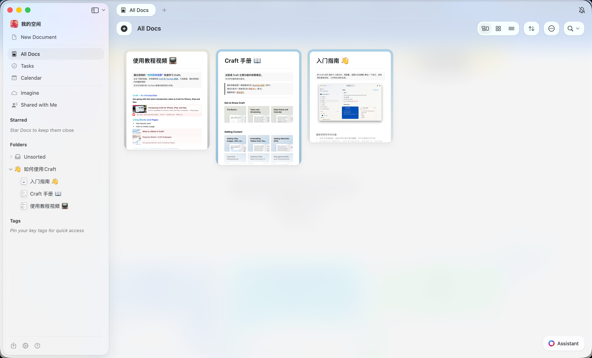

现状三个字：low、土、配色老派。Craft 给你看了什么叫"克制的留白"。 这份报告只做审视、不动代码——挑一个 V 方案，我再下手。
看图 30 秒，抓 5 条就够了——接下来每一条都对应 onedesktop 的一处病。

浅暖灰 canvas、纯白卡片、几乎无阴影、单色线性图标。 整屏就一个彩色点（右下角 Assistant）。
基于 8/4 HEAD 代码（`App.css` + `Sidebar.tsx` + `TopBar.tsx`），客观复刻现状。
| 维度 | 当前值（App.css） | 看图感觉 |
|---|---|---|
| 背景 | --bg-primary: #ffffff 全屏大块纯白 |
像没装桌面壁纸 |
| 侧栏底 | --bg-secondary: #f5f5f7 |
其实够灰了，能用 |
| 主色 | --accent: #006edb |
饱和度偏高、面积用得太猛 |
| Logo | linear gradient + box-shadow + 6px 圆角 | 看着像 2018 年的 SaaS logo |
| 卡片圆角 | --radius-md: 10 / --radius-lg: 14 |
偏硬，缺"软" |
| 卡片阴影 | --shadow-md: 0 4px 12px rgba(0,0,0,.08) |
偏重，"低"就是阴影重出来的 |
| 消息气泡 user | background: var(--accent) 全蓝填充 |
整屏蓝气泡跳，太花哨 |
| 选中态 sidebar | --accent-soft 蓝色 8% 软底 |
能用，但比纯灰底差口气 |
改了第 1、2 项，立刻能让整屏看起来"贵"一倍。后面的排第 3、4…… 都是必要不紧急。
linear-gradient(--accent → --accent-pressed) + box-shadow: var(--shadow-sm)。
像 SaaS 营销页 logo，不像 macOS 原生应用。
fill: #0066CC 单色 + 移除 box-shadow + 圆角 6→4 让它"靠色块自描述"。
--shadow-md: 0 4px 12px rgba(0,0,0,0.08)，所有"浮起来"的地方都很重。
这就是"low"的体感来源之一。
0 1px 2px rgba(0,0,0,0.04) 的极轻投影；
浮起来靠"浅暖灰 canvas + 纯白卡片"的对比，不再靠阴影。
--radius-md: 10px 给聊天消息、按钮，--radius-lg: 14px 给大卡片。
10 在 2026 年看着像"工具软件"，14-16 才像"内容产品"。
--radius-md: 10（保留，给按钮），
大卡片新增 --radius-card: 16px（替代 14）。
#ffffff，卡片也是 #ffffff。
没有"底"和"片"之分，所以卡片"飘不起来"。
--bg-canvas: #FAFAFC 给内容区；
卡片仍是 --bg-surface: #FFFFFF。靠 1.5% 灰度差把卡片"浮"出来。
.message-bubble.user { background: var(--accent); }
整个屏幕全是高饱和小蓝块，远看像一堆 emoji。
max-width: 70%）+ 收紧内边距 +
让 user 气泡也用 --bg-elevated + 蓝边描线（hybrid）。
--accent-soft 蓝色软底。
整屏"哪儿都点过"，过于花哨。
--bg-hover 或更深一档（如 #EBEBF0），
让图标和文字"主动变深"承担"选中"语义，不靠蓝色。
不论选哪个方案，下面的红线不能跨。
| 维度 | 原则 | 数值参考 |
|---|---|---|
| 色彩 | 中性灰主调，主色 ≤5% 面积 | #1D1D1F / #6E6E73 / #AEAEB2 |
| 背景层 | canvas 和 surface 必须有灰度差（卡片才"浮"） | canvas #FAFAFC / surface #FFFFFF |
| 字号 | 10/11/12/13/15/17/20/24px type scale | 标题 600 / 正文 400 / 强调 500 |
| 圆角 | 按钮 8-10 / 小卡 10 / 中卡 14 / 大卡 16-18 | --radius-{sm/md/lg/xl} |
| 阴影 | 极轻，浮起来靠 canvas 灰度差而非投影 | 0 1px 2px rgba(0,0,0,.04) 唯一一档 |
| 图标 | 单色 SVG，统一 1.5-2px stroke，禁用 emoji | stroke="currentColor" |
| 间距 | 8px 网格，gap ≥ 16px | --space-{xs/sm/md/lg/xl} |
| 动效 | 200ms cubic-bezier，仅颜色过渡 | 不引导 transform / opacity 全局动画 |
从"零风险"到"全换装"，四档可选。
--shadow-md 改成 0 1px 2px .04--bg-canvas #FAFAFC，主区背景用 canvas--bg-secondary，与 canvas 错层--radius-card: 16App.css 全量改写、token 全调、所有组件过一遍。节奏就是 ≤ 1 天一档，每档可回退、可对照设计风格清单验证。
--bg-canvas / 大卡片圆角 16 / TopBar 重排 / 主标题字重 600。
这一天不要碰业务逻辑，只动 token + 视觉骨架。
如果你点头 V2，下面这 11 条 token 改动就是落地点——可以一晚上做完。
| Token | 现在 | 改成 | 用途 |
|---|---|---|---|
--bg-canvas |
无 | #FAFAFC 新增 |
内容区背景 |
--shadow-card |
复用 --shadow-md | 0 1px 2px rgba(0,0,0,.04) 新增 |
统一大卡片投影 |
--radius-card |
无 | 16px 新增 |
群/任务/详情卡片 |
--radius-md |
10px | 保留 | 按钮 / 输入框 |
--shadow-md |
0 4px 12px rgba(0,0,0,.08) | 0 2px 6px rgba(0,0,0,.04) |
中卡片 / 抽屉 |
.sidebar-nav-item.active |
background: --accent-soft | background: #EBEBF0 |
侧栏选中态 |
.sidebar-group-item.active |
同 | 同 | 群项选中态 |
.message-bubble.user |
background: --accent | background: --bg-elevated + 蓝边 |
User 气泡 |
.topbar-title |
font-weight: 600 | 保持 600 / letter-spacing -0.02em | 标题对齐 |
Sidebar.tsx LogoMark |
gradient + box-shadow | fill: #0066CC + 移除 box-shadow |
logo 去装饰 |
TopBar.tsx 右侧 |
留白 | 4 个图标按钮（视图 / 排序 / 搜索 / 设置） | 顶栏紧凑 |
我准备开第一个 PR——你在下面两问选一下方向。
决定后我开干，按 V1 → V2 节奏每天一档。